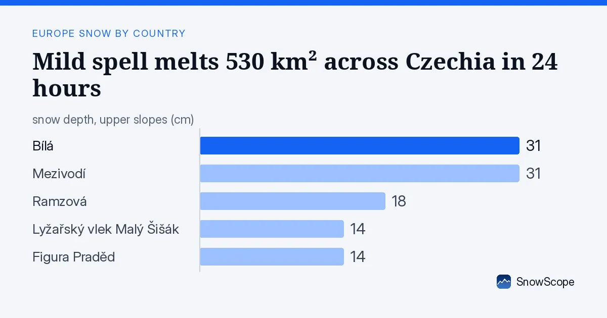

Mild spell melts 530 km² across Czechia in 24 hours
A warm day on 16 November has removed snow cover across more than 500 km² of Czechia. Bílá still holds 31 cm at its measurement point, but the thaw has thinned the white map significantly—and more water is draining from the mountains today.
See the live snow forecast for Bílá in the SnowScope appSnow depth, powder alerts and the 3D map, free.
One day of melt stripped half the snow cover
Yesterday morning, snow lay on 1,250 km² across the country's ski terrain. By 16 November, that had fallen to 720 km². This rapid loss is the signature of a thaw: air warm enough to melt the snowpack faster than the mountains can hold it.
In hydrology, we watch these events because they release stored water into streams and reservoirs. A single warm day in November—when snow is still thin and the season barely begun—can send a pulse of melt water downslope. Bílá and Mezivodí held their snow best, each still at 31 cm, but across the low and mid-height ranges the cover shrank noticeably.
The snow line rose to 1,200 m as the thaw worked upward. Below that height, only 2 to 28 percent of the terrain is now white, depending on altitude. The timing matters: early-season thaw like this can be followed by refreezing or new snow, which resets the depth measurements at the stations.
| Resort | Snow depth | New snow, 72 h | Coming, next days | Top |
|---|---|---|---|---|
| Bílá | 31 cm | 0 cm | 0 cm | 767 m |
| Mezivodí | 31 cm | 0 cm | 0 cm | 722 m |
| Ramzová | 18 cm | 0 cm | 6 cm | 1,328 m |
| Lyžařský vlek Malý Šišák | 14 cm | 1 cm | 6 cm | 1,153 m |
| Figura Praděd | 14 cm | 1 cm | 5 cm | 1,441 m |

Snow sits higher, thinner at lower elevations
The melt has concentrated what remains of the snowpack. Between 500 and 1,000 m, mean depth is now zero across the region modelled by our snow model, and cover sits at just 2 percent. Higher up, between 1,000 and 1,500 m, mean depth is 1 cm and 28 percent of the area holds snow.
This distribution reflects the thaw's reach: warmer air melts lower slopes first. Ramzová, Figura Praděd, and Lyžařský vlek Malý Šišák all sit above 1,100 m and have kept more snow relative to the valleys. Ramzová holds 18 cm, while the two higher stations (Figura Praděd and Lyžařský vlek Malý Šišák) each have 14 cm, with 1 cm added over the past 72 hours—likely from earlier fronts now being consumed by the thaw.
More snow arrives tomorrow
The melt will not last. Our snow model shows 4 cm falling on 17 November, the snowiest day forecast in the next week. That fresh snow will rebuild cover, particularly at higher elevations where it is most likely to stick. By the end of the three-day outlook (19 November), the model expects 6 to 8 cm to have accumulated at mid-to-high resorts such as Ramzová and Figura Praděd.
Looking further ahead, the second week of the forecast (24 to 30 November) holds more substantial snowfall: up to 19 cm is modelled. This is when the winter pattern will begin to consolidate. For now, the landscape is in transition between autumn thaw and winter accumulation.
Bílá and Mezivodí lead the depth chart
Both Bílá and Mezivodí hold the deepest snow measured on the ground: 31 cm each. These two resorts have resisted the thaw better than higher-altitude locations, possibly because of their position in topographic pockets where cold air collects or earlier season snow laid down more base.
No new snow fell at either resort in the past 72 hours, and the forecast shows 0 cm over the next three days. That suggests the thaw has affected their measured points as it has the broader map. However, Bílá's 31 cm is still a foundation: once fresh snow arrives, the total depth will climb. Ramzová, by contrast, is primed to gain snow quickly—it sits at 1,328 m and the model shows 6 cm arriving by 19 November.
Neighbours hold more snow at higher altitude
Slovakia and Poland both have higher median elevations and both escaped today's thaw more effectively. Slovakia's white share is 11 percent, with Ski centrum Dedinky holding 48 cm. Poland shows 11 percent cover as well, led by Orlické Záhoří at 45 cm. Both countries are forecast to gain 15 to 16 cm over the next week—more than Czechia's mid-range models. The higher altitude of the Carpathian and Tatra terrain gives them an advantage in retaining and building snow when cold air masses arrive.
What to expect on the slopes
Thin snow and exposed ground are the reality at lower elevations today. Rocks and grass are likely visible under the 0 to 1 cm of cover below 1,000 m. Ramzová and the higher runs have better prospects, with 14 to 18 cm offering more protection. Tomorrow's 4 cm will add a fresh layer but will not dramatically thicken the base at any resort.
The melt water from today has drained into streams and reservoirs; hydrologically, this is good early-season water supply for the region. For skiers, patience is the key forecast. The window opens wider after 24 November when the second week's heavier snowfall arrives.
Tips for skiers
- Check avalanche forecasts at higher resorts (above 1,100 m) before going off-piste, especially after tomorrow's fresh snow on 17 November when slope stability is uncertain on new deposits.
- Stay on marked slopes where snow is thinnest; below 1,000 m, rocks and stumps are close to the surface and hidden under thaw crust.
- Ramzová and Figura Praděd will offer the most reliable snow depth and are the best bets for the next few days while they await fresh accumulation.
- Expect refreezing overnight given the season; morning runs may have better coverage than afternoon skiing as the thaw continues.
- Use SnowScope's map to check depth at your chosen resort before you go; conditions vary sharply with elevation right now.
About these numbers
Resort snow depths are the deepest snow on the resort's upper slopes from the SnowScope snow model (about 1 km, run of 16 November); they are estimates for an area, not a measurement at one point. Station values are measurements on the date shown. Forecasts can change. Always read the official avalanche bulletin before going off-piste.
Cite this report
For research, teaching or the press: the numbers and charts are free to reuse under CC BY 4.0 with this citation.
SnowScope (2026), Mild spell melts 530 km² across Czechia in 24 hours, https://snowscope.app/blog/en/2026/11/czechia-snow-report-16-november-2026.html, accessed 2026-11-16
SnowScope (Atlas Labs). (2026, November 16). Mild spell melts 530 km² across Czechia in 24 hours. SnowScope snow reports. https://snowscope.app/blog/en/2026/11/czechia-snow-report-16-november-2026.html
BibTeX
@misc{snowscope2026czechiasnowreport16novem,
author = {{SnowScope (Atlas Labs)}},
title = {Mild spell melts 530 km² across Czechia in 24 hours},
year = {2026},
month = nov,
howpublished = {\url{https://snowscope.app/blog/en/2026/11/czechia-snow-report-16-november-2026.html}},
note = {Published 2026-11-16 20:42 UTC; accessed 2026-11-16}
}· CC BY 4.0 · Methods, data and tools →
Bílá: snow and temperature by height, this winter vs last (tools) →
Follow Bílá
Free: a message when fresh snow is coming, and the forecast every morning.
More snow reports

Boí Taüll starts at 2039 m and beats Baqueira Beret on day-pass price, though early December snow still takes some patience.

Baqueira-Beret sits in the Val d'Aran, on the Atlantic side of the Pyrenees. What that means for its snow, tested with 46 past winters against La Molina, and when to go.

Planning a December trip to Baqueira Beret? See our snow history, ticket prices starting at 70,00 € for a 1-day pass, and how it compares to Astún-Candanchú.